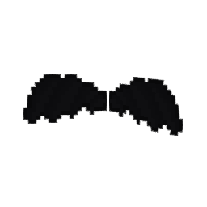
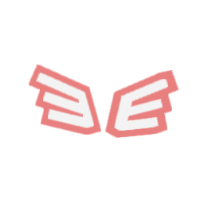
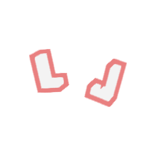
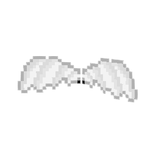
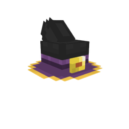
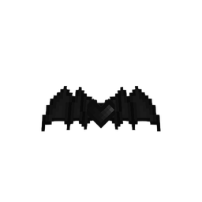
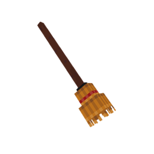
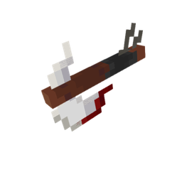
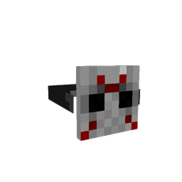

Питомец
Warden
Самый маленький Варден Древнего города. Сбежал, потому что никто не верил, что он страшный. Всё слышит своими ушками — даже как ты крадёшься к сундуку.
Бесплатный лаунчер Minecraft
Java и Bedrock в одном окне, пати с голосовым чатом, друзья из Xbox, оверлей в игре — и питомцы, которые летают за тобой.
Потяни за край картинки
Всё, что нужно, чтобы играть с друзьями, — в одном окне.
Питомцы и наборы, у каждого своя история. Достаются за задания в событиях, по кодам или за монеты в лаунчере.
Питомец
Самый маленький Варден Древнего города. Сбежал, потому что никто не верил, что он страшный. Всё слышит своими ушками — даже как ты крадёшься к сундуку.
Питомец
Жила себе на болоте, пока Крипер не взорвал ей домик. Теперь летает за тобой и делает вид, что всё под контролем.
Питомец
Выпал из костра вместо угля — и ему понравилось. Боится воды и Эндерменов, но тебя почему-то нет.

Набор
Крылья почернели после ночёвки в Незере без кровати. Нимб остался — теперь с рожками, для солидности.


Набор
Чертёнок из бастиона выменял у пиглинов всё золото на розовую краску. Пиглины до сих пор не поняли, кто кого обманул.

Набор
Говорят, их выдают тем, кто ни разу не строил столб из земли под собой. Шутка — их просто можно получить.
Событие · весь октябрь
Шляпа ведьмы, метла, крылья летучей мыши, топор в голове и хоккейная маска — за задания в игре. Заходи в лаунчер, задания уже ждут.





Есть код на косметику? Введи его — лаунчер откроется с ним сам, останется нажать «Активировать». Косметика привяжется к твоему Xbox-аккаунту.
Монеты для косметики в лаунчере. Пополнение скоро откроется — а пока косметику дают за задания в событиях и по кодам.
Лаунчер был и останется бесплатным. Косметика — только для красоты и на игру не влияет.
Да. Лаунчер бесплатный, без рекламы и подписок. Косметика — только для красоты и на игру не влияет.
Коды раздаём в событиях и розыгрышах. Каждый код срабатывает один раз; если набор у тебя уже есть, код не тратится — можно отдать его другу.
С аккаунтом Microsoft, где есть Minecraft, играешь как обычно, на любых серверах. С Xbox-аккаунтом без Java она запускается офлайн: одиночная игра, LAN и серверы без лицензии работают, лицензионные серверы не пустят.
Все, кто играет через MC Launcher, — и в Java, и в Bedrock. На серверах со своими паками (например, The Hive) в Bedrock её пока не видно.
У установщика пока нет платной цифровой подписи, поэтому SmartScreen видит «неизвестного издателя». Нажми «Подробнее» → «Выполнить в любом случае». В браузере — «Сохранить».
Никак — лаунчер сам скачивает новую версию в фоне и ставит её, когда ты его закрываешь.
Windows 10 и 11, 64-бит. Для Bedrock нужна установленная Minecraft for Windows.